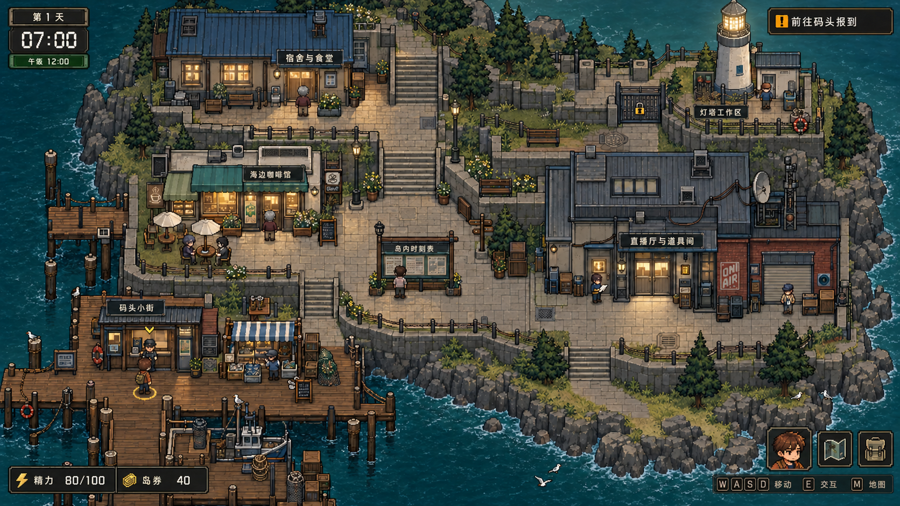
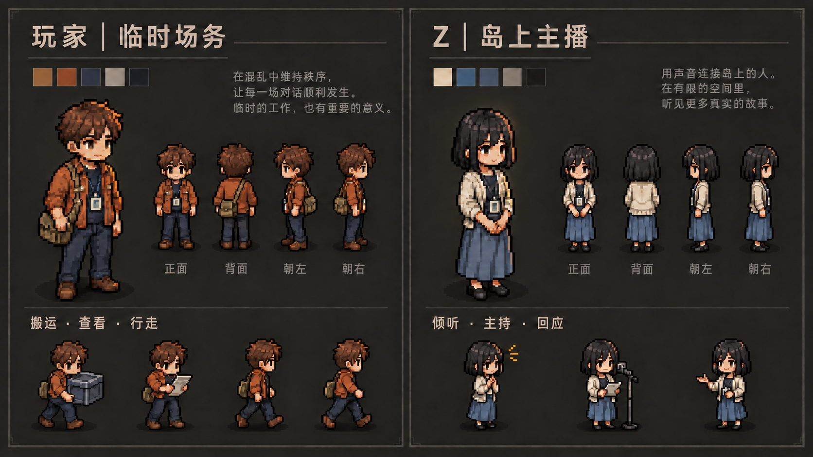
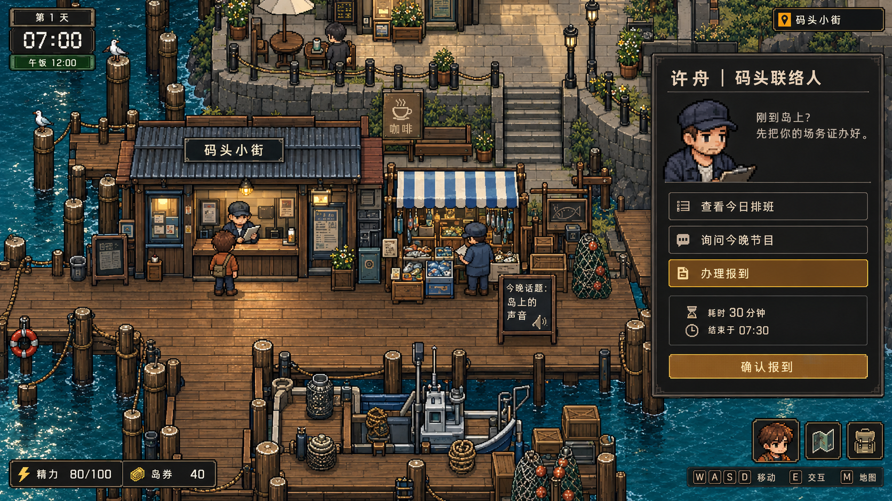
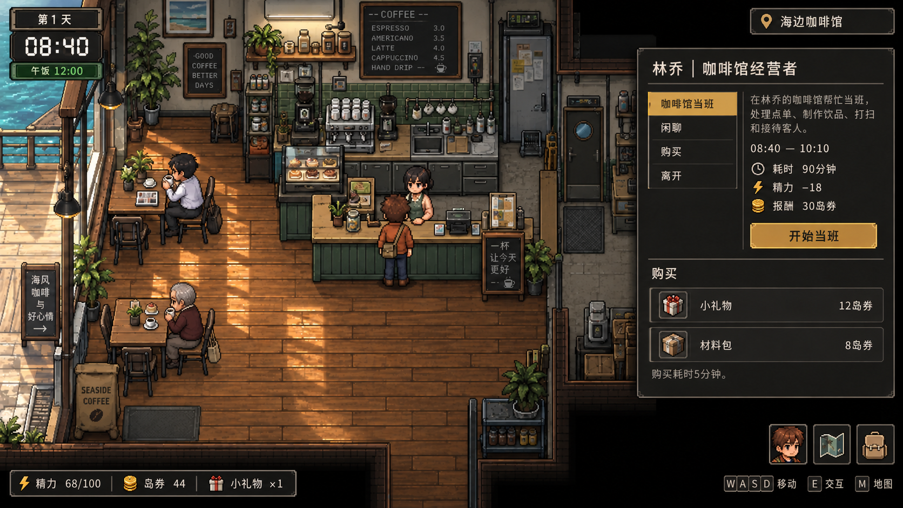
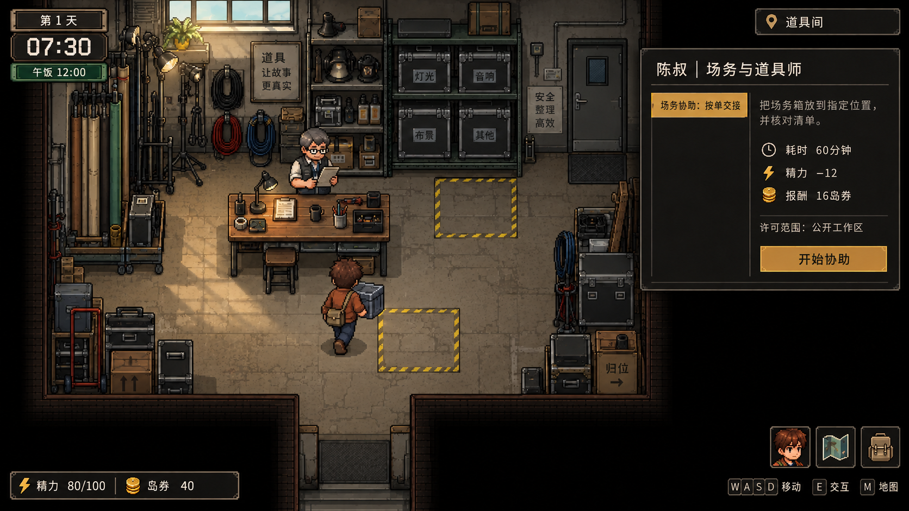
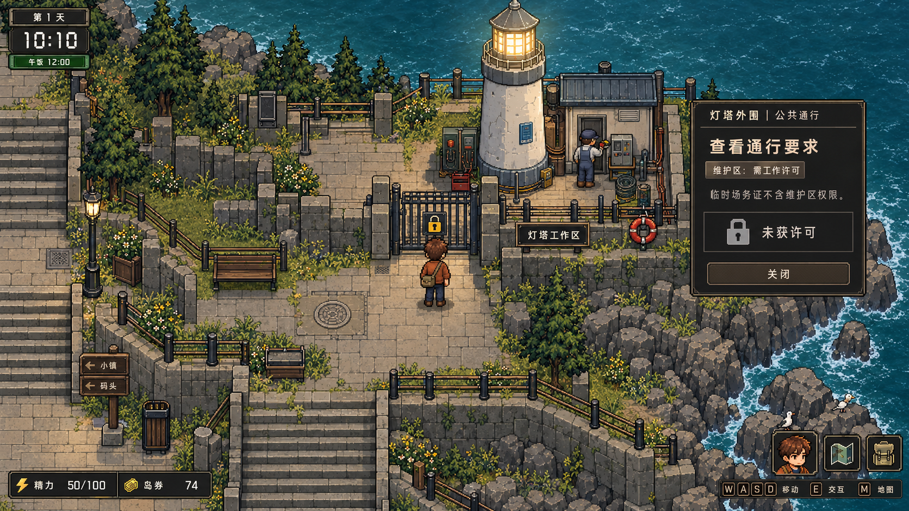
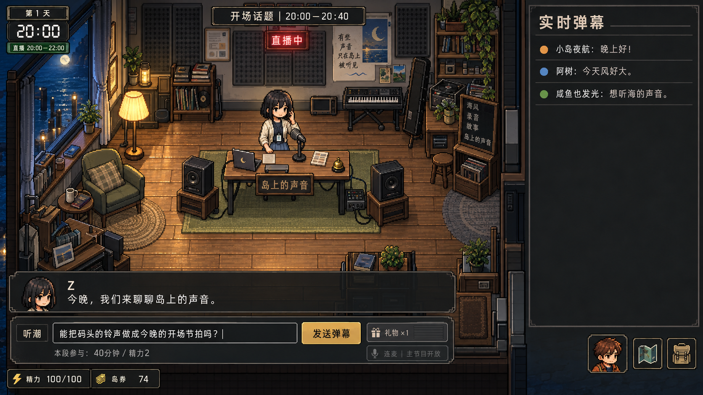
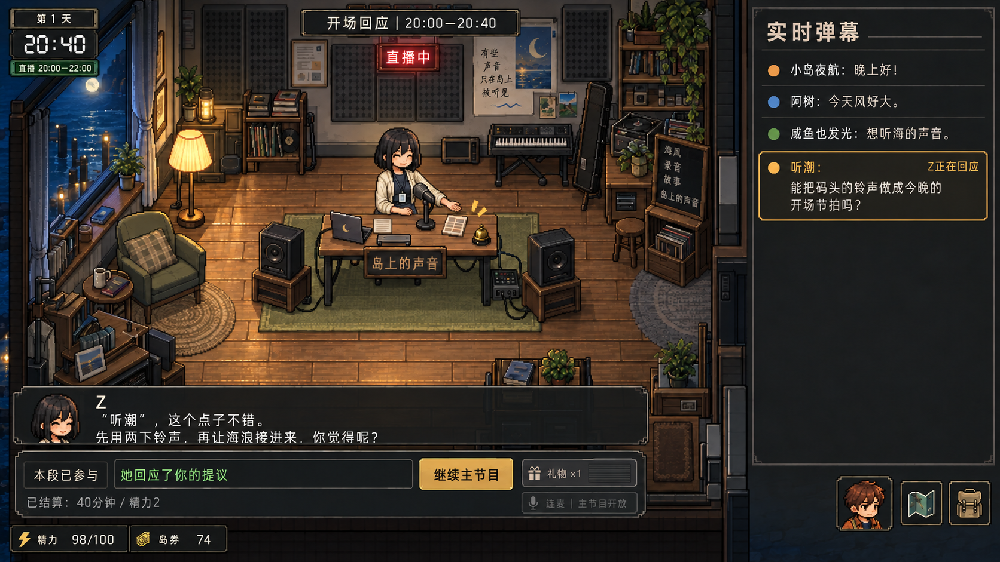

01岛图可玩空间总览
打开 PNG 原图对照道路、建筑入口与玩家比例：首章开放码头、咖啡馆、道具间和宿舍，灯塔区域保持锁定。

02玩家与 Z 的人物比例
打开 PNG 原图对照人形角色的轮廓、服装、方向与动作；这是人物设定参考，不是可直接导入的精灵图集。

03码头问询与报到
打开 PNG 原图呈现公开公告、NPC 问询与正式报到的入口，区分阅读信息和需要耗时的办理动作。

04咖啡馆工作与购买
打开 PNG 原图对照班次、行动成本、预期报酬和商品价格，避免将尚未完成的工作收入显示为已有余额。

05道具间的正常场务
打开 PNG 原图展示搬运、清单交接和限定工作范围；此时仍是正常场务任务，没有提前发生与 Z 的私人会面。

06灯塔外部门禁
打开 PNG 原图以可见的门禁表达权限边界：玩家可以了解通行要求，不能因此进入维护内部或取得迁移能力。

07夜间直播：观看与输入
打开 PNG 原图展示 D1 开场节目中尚未提交的表达，以及话题、参与成本和互动入口；下一张为同一节目段的反馈。

08夜间直播：Z 的点名回应
打开 PNG 原图对照上一张的昵称、原文与话题，呈现已提交互动的回应；被注意不等于获得私人邀请或建立亲密关系。
